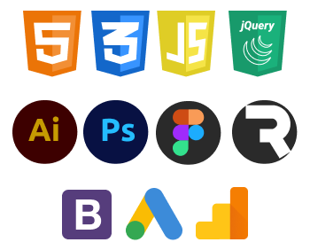

Na trhu fungujeme krátce, tudíž naše projektová sekce není zaplněná desítkami projektů,
i když by mohla, nechceme Vám ukazovat další mainstreamové weby, nebo aplikace na počasí.
Chceme z internetu dělat zajímavější místo, pomocí přitažlivějších barev, animací, obrázků, textů a pomocí mnoha dalších prvků.
A to jak tvorbou webových stránek, tak vytvářením kvalitnější grafiky, designu, nebo například i tvorbou NFT (nezaměnitelných tokenů).
Vždy originální. Netvoříme podle šablon, vše co děláme je na míru klientovi a to ať jde o web či design.
Co se týče našich dovedností, pracujeme s: HTML, CSS, JavaScript, jQuery, Adobe (Illustrator a Photoshop), Figma, Rive, Bootstrap, Google Ads a Analytics.

Stále sledujeme trh a jeho vývoj, tak i vývoj aplikací a programů pro práci s weby a designem,
zůstáváme tedy vždy aktuální a tím i naše práce.
Pro klienty zajišťujeme server-hosting pro webové stránky, správu webových stránek, tisk reklamních tiskovin a mnoho dalších služeb.